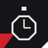
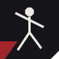

Rutina HIIT de 20 minutos para hacer en la plaza
Sin equipamiento y en cualquier espacio abierto: esta rutina de intervalos sube el ritmo cardíaco y cierra con el cuerpo pidiendo más.
Leer más
Sin equipamiento y en cualquier espacio abierto: esta rutina de intervalos sube el ritmo cardíaco y cierra con el cuerpo pidiendo más.
Leer másEl asfalto no perdona: te contamos qué mirar en la amortiguación y el drop antes de salir a correr por tu barrio.
Leer másLa sed no siempre llega a tiempo. Estos son los números que tenés que tener en cuenta antes, durante y después de entrenar.
Leer más
Una rutina corta para las articulaciones que más sufren el uso diario: tobillos, caderas y hombros.
Leer másFrenar no es no hacer nada. Te contamos cómo programar los días de descanso para rendir mejor el resto de la semana.
Leer másEl detalle completo de cada nota, para leer sin salir de esta página.